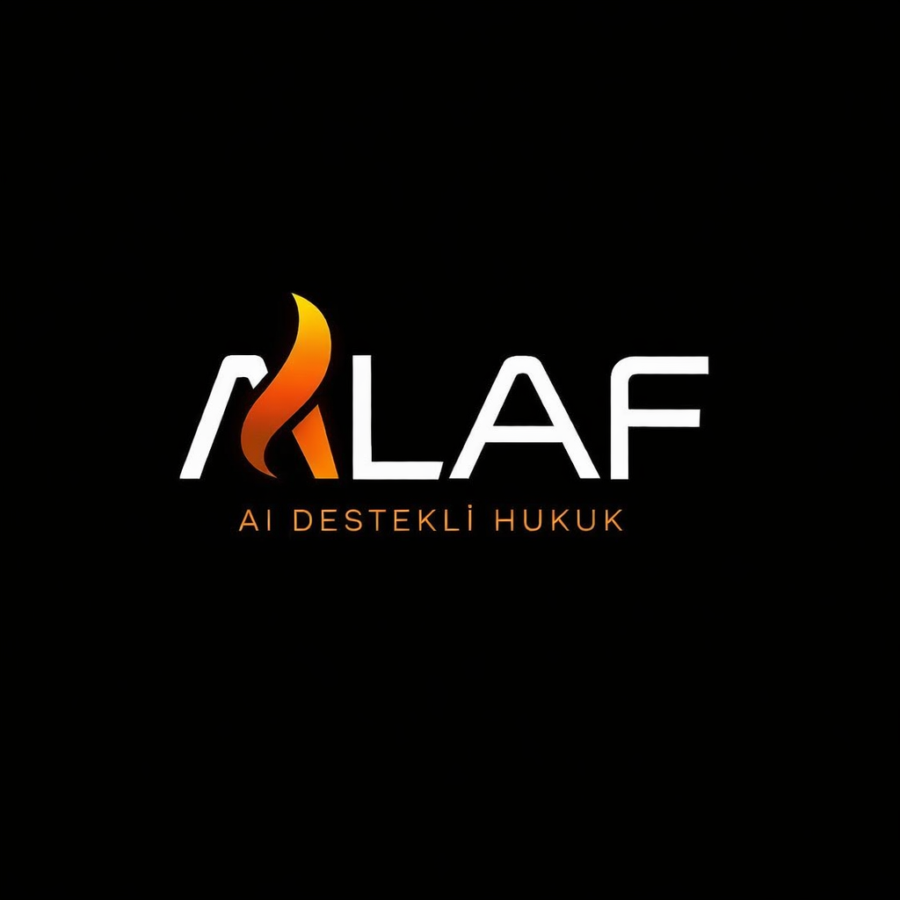

Yargıtay ve BAM kararlarına dayalı akıllı analiz akışıyla, kullanıcıya prompt yazdırmadan hukuki taslak üretimi.
Yüklenen dosyalar MVP akışında kalıcı olarak saklanmaz. İşlem sonrası geçici veri temizlenir.
Kullanıcıdan serbest prompt almak yerine yönlendirmeli akış kullanılır.
Demo için şu anahtar kelimeleri deneyebilirsin: dolandırıcılık, hakaret, icra
İçtihatlar taranıyor, olay örgüsü çözümleniyor ve taslak hazırlanıyor.